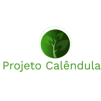
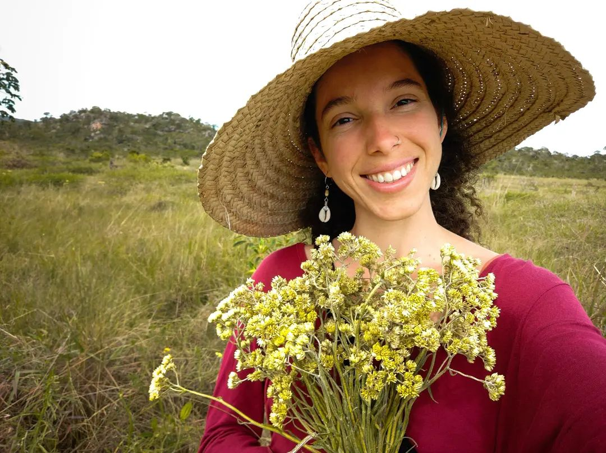
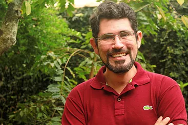

Referências
Evaldo Travassos
Naturopata, fitoterapeuta e autor do livro: Guia de Identificação das Ervas Medicinais.
- Instagram: @escritordasaude
- Facebook: Escritor a Saúde
- Youtube: Escritor da Saúde

Thaís Memo
Parteira e Raizeira na Chapada dos Veadeiros, estuda Plantas Medicinais e Tratamentos Naturais para Saúde Ginecológica.
- Instagram: @thaismemo
- Telegram: Ginecologia Orgânica
- Youtube: Thais Memo - Ginecologia Orgânica

Daniel Forjaz
Biólogo, pós graduado em ecologia, especialista em fitoterapia clinica e pesquisador de plantas medicinais, vem ampliando seu conhecimento em fitoterapia clinica.
- Instagram: @autordapropriasaude
- Facebook: Autor da Própria Saúde
- Youtube: Autor da Própria Saúde